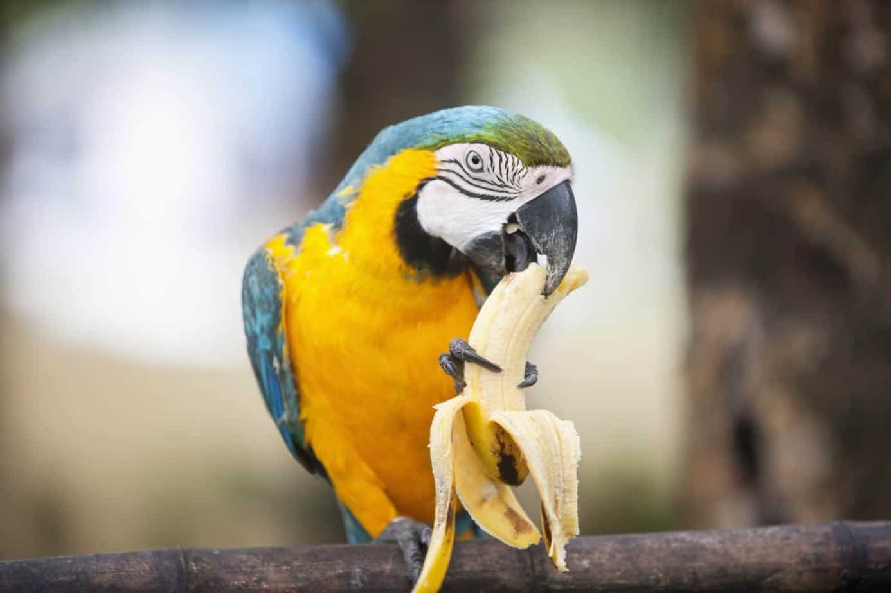

Can Parrots eat Bananas and Apples?
Parrots are very social eaters, and they love sharing snacks with their humans. The problem is, parrots can’t eat everything that we can.
In the wild, parrots learn what is safe to eat from their flockmates. But at home, they don’t have the same guidance.
In return, it’s our responsibility as owners to make sure they are eating what’s healthy for them – and avoiding what isn’t. So the question of the day is – can parrots eat bananas?
The simple answer to this question is yes, parrots can eat bananas. In fact, bananas should be incorporated into their diet as part of their daily fruit intake. Unlike many other fruits that can pose cautions (ie. Parrots cannot have apple seeds), bananas don’t pose much risk to our feathered friends.